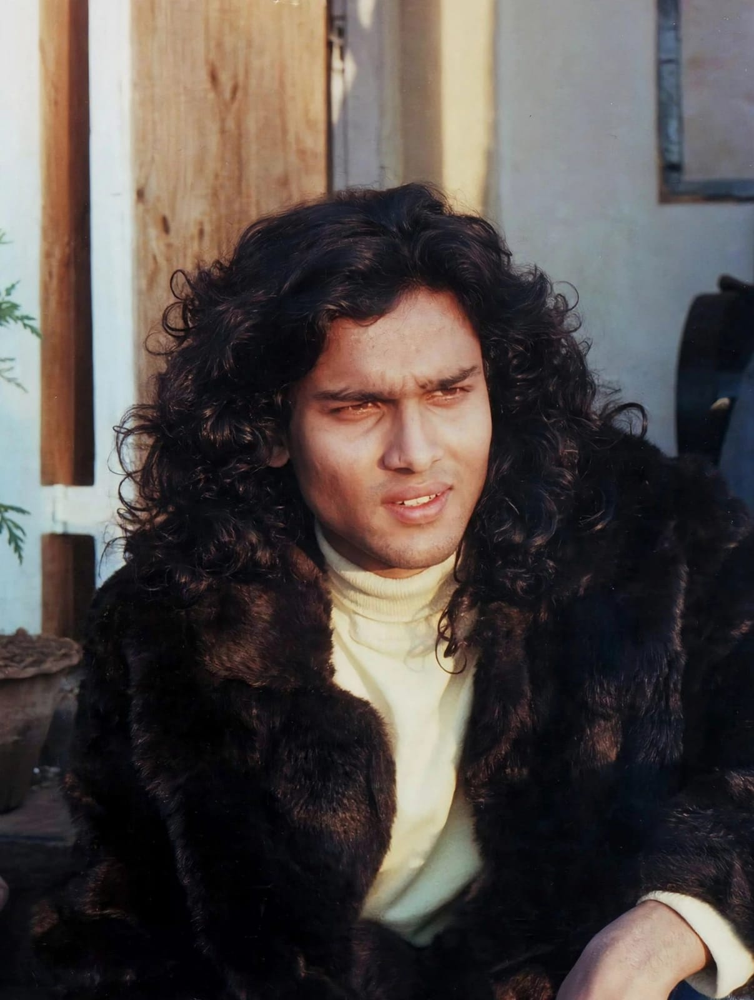
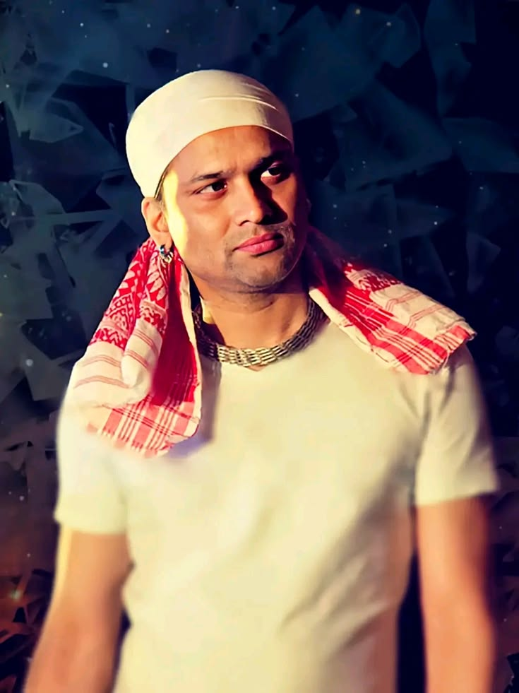
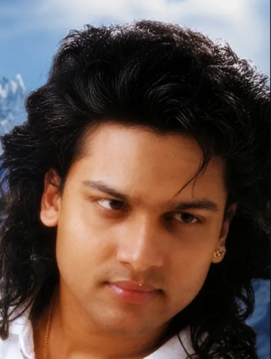

THE VOICE OF ASSAM
A legendary singer, composer, director, musician, and cultural icon of Assam.
Discover His Journey ↓HIS STORY

Zubeen Garg is an Indian singer, composer, director, musician, songwriter, and filmmaker from Assam. He is widely known for his contributions to Assamese music and cinema.
Born on 18 November 1972 in Tura, Meghalaya, he became a prominent figure in Assamese music and also worked in several Indian languages, including Hindi,Bengali and English.
Throughout his illustrious career, Zubeen Garg lent his voice to over 40,000 songs across more than 40 languages and dialects, leaving an extraordinary musical legacy that transcends borders and generations.
His music has connected generations of listeners and has played an important role in popularizing Assamese culture. His songs and legacy will live on forever — ∞ , continuing to inspire and connect generations of listeners.
MEMORIES


HIS MUSIC
Explore Eighteen songs associated with Zubeen Garg. Add your authorized audio files to play them.